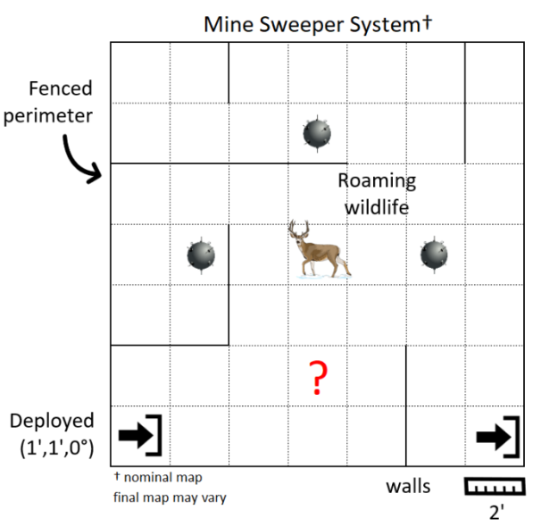
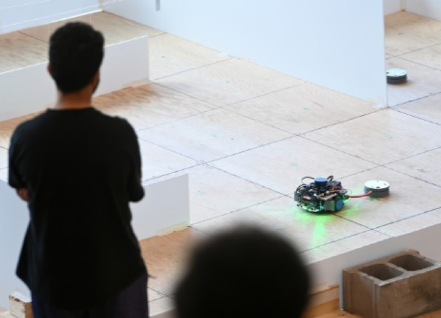
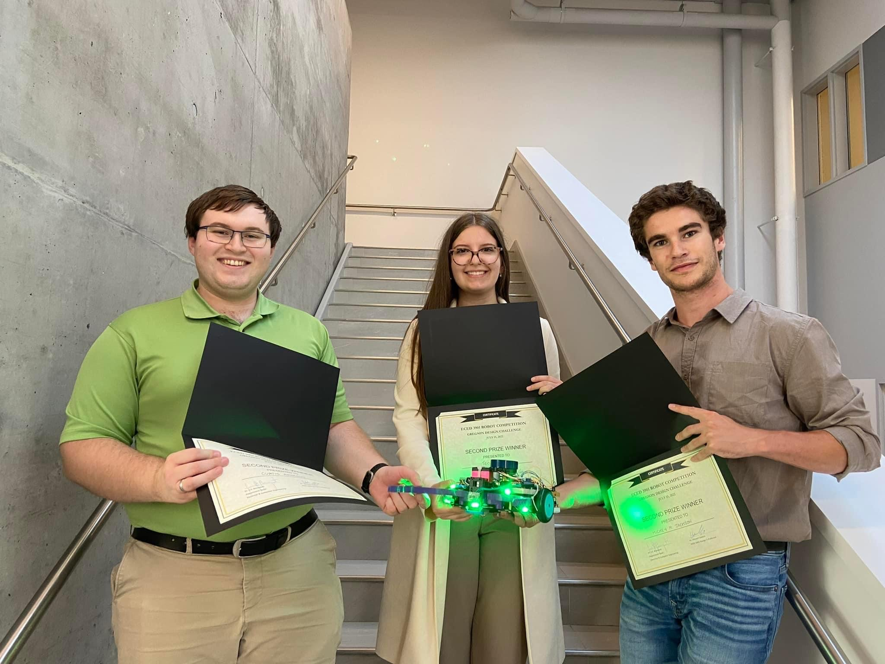
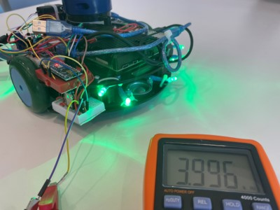
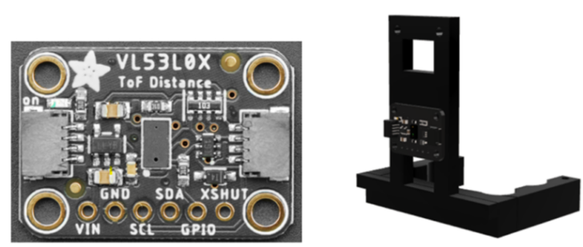
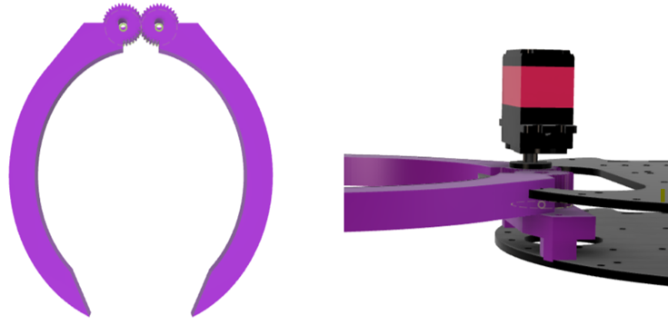
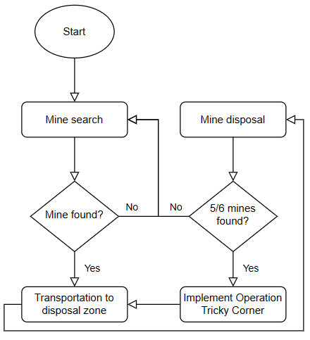

Autonomous Robot
Overview
My design course team and I built an autonomous robot for the Peter Gregson Competition, where we were challenged to make a robotic mine sweeper for arbitrary field maps. Our robot was capable of obstacle avoidance, disposal and detection of simulated mines using Robot Operating System (ROS), Linux command line, shell scripting, and version control (GIT). On competition day, we earned second place out of 32 teams by deactivating and returning 5 mines to the disposal site, and by hitting no walls in less than ten minutes.

Peter Gregson Competition course map
The Rules
- Robot must be enclosed in a defined perimeter with a pre-determined deployment zone
- All communication and code implementation must be done through ROS
- Robot must implement obstacle avoidance to not physically contact wildlife, fences, or mines
- Robot is to find, deactivate, and dispose of mines in pre-specified and unknown locations to a disposal site
- Ideally, the procedure should be done in less than ten minutes
Although our robot did not dispose of all six mines, it is capable of doing so. In fact, its failed attempt to secure the last mine was due to a contingency external to the robot's performance where another team inserted an HDMI cord into their computer while our run was still underway.



Competition day photos
Hardware
The Initial Hardware Pieces
- Raspberry Pi 4B
- 2D LiDAR
- DRV8834 motor driver
- Wheels, wheel motors and encoders
- GR-US-101 battery management system
- Lithium-ion batteries
What We Added
- LED system for deactivating mines
- Claw mechanism for grabbing mines
- Mine detection system for detecting mines with unknown locations


Adafruit VL53L0X ToF sensor and 3D printed mount
The Time of Flight (TOF) Sensor
- Used to trigger the claw to close when a distance measurement was within a specified range (100 mm)

3D printed claws and servo mount
The Claw Mechanism
- Utilized a wide claw area, designed to grab mines at awkward angles, allowing precision during waypoint navigation and the Mine Search mode of operation
- Contained a 20 kg.cm servo motor powered via the provided 12V lithium-ion batteries
The LED System
- Designed to deactivate mines reliably at all angles
- Utilizes 12 LEDs operating close to their rated current of 30 mA
- Contained an N-MOS transistor, switched by an Arduino at a frequency of 4 kHz, while receiving power from the provided 12V lithium-ion batteries
The Wheels
- Upgraded from the provided wheels, allowing more traction
- With a larger rotational diameter, the robot rested less on the caster wheels
- Resulted in the robot getting stuck less on uneven floor
Software
We used ROS topics to mesh together two source codes which allowed programs to run simultaneously to alternate between dead reckoning and waypoint navigation as required. The software took the form of a state machine, where multiple states had specific functionalities.
Modes of Operation
- Mine search
- Transportation to disposal zone
- Operation Tricky Corner
Waypoint Navigation
Responsible for:
- Searching for and obtaining mines
- Transporting mines to the edge of the disposal zone once a mine was secured
- Moving autonomously and avoiding collisions by using ROS Navigation stack and information from 2D LiDAR and odometry
- Determining robot's position by using Adaptive Monte Carlo Localization to find probabilistic distribution of all possible robot positions
Dead Reckoning
Responsible for:
- Mine disposal once the disposal zone had been reached via waypoint navigation
- Entering a troublesome corner within the contest map
- Controlling linear and angular motion using the ROS topic cmd_vel and the message type Twist(), which is part of the ROS package geometry_msgs
- Wheel encoders helped to estimate the robot's position via odometry using wheel encoders

State machine flowchart